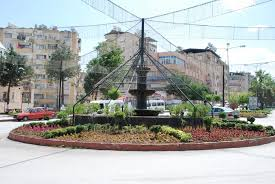
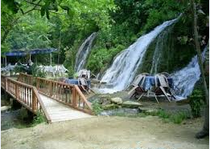

| Kırıkhan |
- Kırıkhan
- Tarihçe
- Coğrafya
- Nüfus
- Kültür
- Ekonomi
|  |
Ülke |
Türkiye |
| İl |
Hatay |
| Coğrafi Bölge |
Akdeniz |
| Yüzölçümü |
715 km2 |
| Rakım |
151 m |
| Posta Kodu |
31440 |
| İl Alan Kodu |
0326 |
| İl Plaka Kodu |
31 |
|
Kırıkhan'ın tarihi yapısı isa'nın doğumundan 3000 yıl öncesine kadar uzanmaktadır. Bağlı bulunduğu hatay merkezi ile tarihi bir uyumluluk gösteren ilçe merkezinde orta paleolitik döneme ait kalıntı bulunmamakla birlikte sırasıyla akat, hurr, hitit, asur ve pers akınları ile kısa süreli yerleşimlerin yöre için söz konusu olduğu kesindir. Özellikle milattan 33 yıl öncesine kadar makedonyalı büyük iskenderun pers imparatorluğunu yıkması ile birlikte kurulan yeni düzen kırıkhan'da yoğun yerleşimlere sahne olmuştur. Gerek bu yıllarda gerekse daha sonraki dönemlerde şimdiki alaybeyli bölgesinin iskan edildiği tespit edilmiştir. Helenistik dönemin izlerini taşıyan darb-ı sak kalesi ile ova boyunca bir dizi halinde yer alan höyükler kırıkhan'ın bir güvenlik ve haber alma merkezi olarak düşünüldüğünü ortaya koymaktadır. Halen tescilli 34 höyük mevcuttur. Kırıkhan akdeniz den doğuya açılan ticaret yollarının kesiştiği yer olması özelliğini taşıyan iskenderun'dan halep'e, antakya'dan kahramanmaraş'a ve gaziantep'e giden yollar buradan geçtiği için osmanlı imparatorluğu döneminde de yerleşim bölgesi olarak gelişimine devam etmektedir. Osmanlı imparatorluğunun son dönemlerinde belen kazasına bağlı bir nahiye iken 1924 yılında ilçe merkezi olan kırıkhan, l939 yılında türkiye cumhuriyeti yönetimine girmiştir. Kırıkhan adının nereden geldiği konusunda iki ayrı görüş bulunmaktadır. Bunlardan birisi ticaretin yoğun olduğu yıllarda kervanların konaklaması için yapılan kırıkhanın bulunduğudur, diğeri ise geçmişte bir hanın varlığı ve bunun oldukça bakımsız ve kırık dökük olmasıdır.
|
Kırıkhan ilçesinin yüzölçümü 715 km2'dir. Kırıkhan, coğrafi konum ve yüzölçümü bakımından Hatay'ın en büyük ilçesidir. İlçe topraklarının batısında Amanos Dağları , doğusunda Suriye, güneyinde ise Amik Ovası bulunur. Kırıkhan'ın doğusunda suriye ve kumlu, batısında belen, kuzeyinde hassa, güneyinde antakya ve kumlu bulunmaktadır. Kırıkhan 36-37 derece kuzey enlemleri ile 36-37 derece doğu boylamları arasında 687.730. Km2 bir alan üzerinde bulunmaktadır. İklimi tipik akdeniz özellikleri taşıyan kışları ılık ve yağışlı, yazları kurak ve sıcak geçmektedir. Kışın ortalama sıcaklık 7.39 c derece, yazın ise 32.3 c derecedir.
|
 |
|
| Yıl |
Toplam |
Şehir |
Kır |
| 1965 |
52.292 |
23.405 |
28.887 |
| 1970 |
59.100 |
31.046 |
28.054 |
| 1975 |
68.260 |
38.118 |
30.142 |
| 1980 |
84.417 |
49.891 |
34.526 |
| 1985 |
86.560 |
52.780 |
33.780 |
| 1990 |
103.075 |
68.601 |
34.474 |
| 2000 |
98.530 |
63.615 |
34.915 |
| 2007 |
99.866 |
70.543 |
29.323 |
| 2008 |
102.424 |
68.212 |
34.212 |
| 2009 |
103.092 |
69.285 |
33.807 |
| 2010 |
103.922 |
71.580 |
32.342 |
| 2011 |
104.779 |
72.888 |
31.891 |
| 2012 |
106.452 |
74.717 |
31.735 |
| 2013 |
107.049 |
107.049 |
veri yok |
| 2014 |
107.994 |
107.994 |
veri yok |
|
İlçemiz beyazıt-ı bestami türbesinin bulunduğu helenistik dönemden kalma kale kalıntısı ve su kemerleri özellikle iç turizmin ilgisini çeken bölgelerimizden birisidir. Beyazıt-ı bestami türbesi, batıda kayaların tıraşlanması ile oluşturulan, kuzeyde de sur duvarı ile sınırlanmış bir alanda, birbirine birer kapı ile bağlanan dikdörtgen planlı, beşik tonozlu dört mekandan ibarettir. 2013 yılında başlatılan restorasyon çalışmaları devam etmekte olup, yolun kamulaştırma ve imal edilmesi, ziyaret yolundan geçen alaybey deresinin ıslahı, peyzaj çalışmaları, ziyaret güzergâhının ışıklandırması, sondaj kuyusunun ziyaretin su ihtiyacını karşılaması amacıyla sisteme dâhil edilmesi, ziyaretçilerin bilgilendirilmesi için mekânlar, tanıtıcı broşürleri ve prestij kitabı çalışmaları devam etmektedir. Ziyaretçilerin can ve mal güvenliği açısından risk oluşturan yerler tespit edilerek kaya güvenliği ağı ile şev koruyucu yapımı için gerekli olan tel örgülerin siparişi verilmiştir.
|
 |
İskenderun ve Antakya'dan sonra Hatay ilinin en gelişmiş ilçesidir. İlçe geçimini %50'si tarım, %28'i sanayi, geri kalanları ise diğer meslek alanlarıyla sağlamaktadır. Son 15-20 yıl içerisinde Kırıkhan'da tarıma dayalı ekonomide önemli gelişme gözlenmektedir. 29 çırçır ve prese fabrikası, 2 tekstil fabrikası, 6 yağ fabrikası, 2 mısır kurutmayla birlikte sayı 40 civarındadır. |
|

|

|
|
|